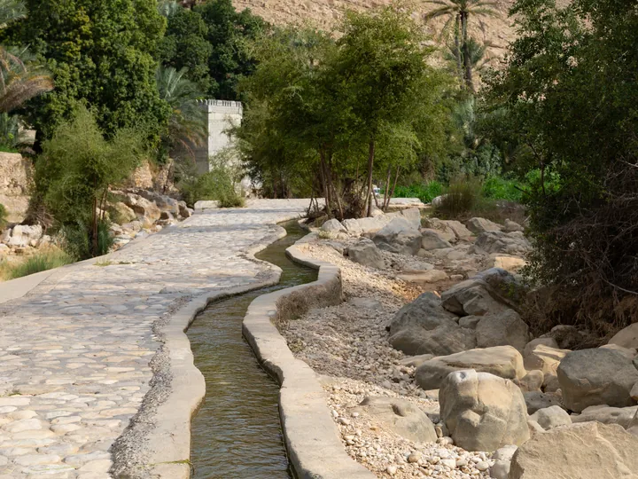
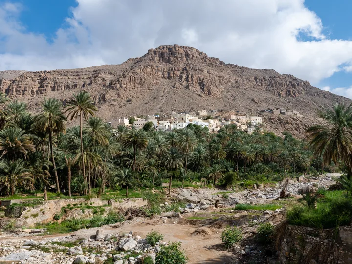
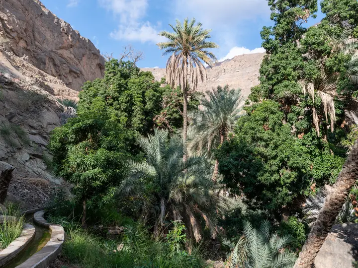
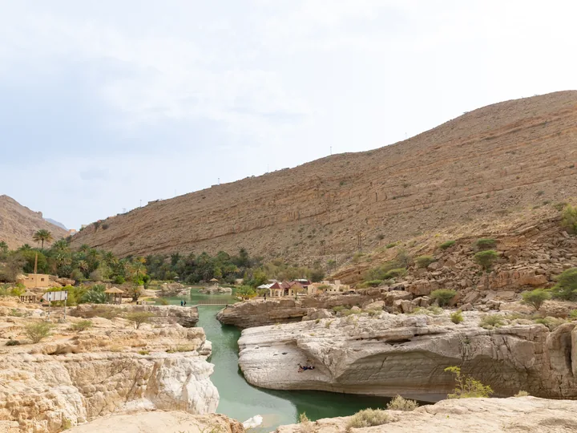

وادي بني خالد بالصور
ستّ صور معاصرة تتنقّل بين بيوت الولاية وبساتينها ومجاري الماء فيها. افتح أي صورة لتتأمّل تفاصيلها وتطّلع على اسم مصوّرها.

بيوت عند سفح الجبل
تظهر المئذنة فوق صفّ البيوت. وتتكرر خطوط الأسطح الأفقية عند قاعدة الجبل ذي الطبقات المائلة.


الفلج بمحاذاة الدرب
يضيّق البناء مجرى الماء عند حافة الممرّ المرصوف. وتكشف هذه الزاوية القريبة عن شكل القناة وهي تنعطف مع الدرب.


القرية وسفح الجبل
تعلو البيوت البيضاء خطّ النخيل، ويمتدّ أمامها قاع الوادي الحجري. من هذه الصورة اقتُصّ غلاف المتحف.


الفلج بين النخيل
يتتبّع الفلج حافة الصخر قبل أن يختفي في ظلّ النخيل. في طرف الصورة يظهر امتداد القناة داخل البستان.


البرك الصخرية
عند البرك يتّسع المشهد. تتعاقب الحواف الصخرية الفاتحة على جانبي الماء، وينفتح المجرى على السفوح البعيدة.

الممرّ المائي
من أعلى تبدو تعرّجات الصخر حول الممرّ الضيّق. ويتبدّل لون الماء بين الفيروزي الفاتح والأخضر الداكن عند الظل.